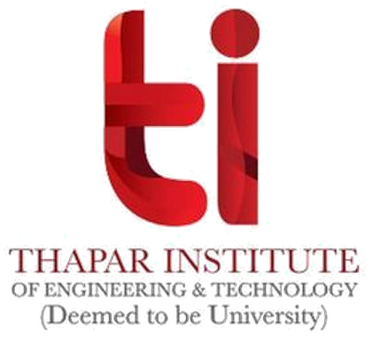

Bachelor of Engineering (B.E.), Computer Engineering
Thapar University, Patiala, India
Engineering architect and leader who builds platforms that scale: 10x Kafka throughput for BFSI, GenAI imagery for 50,000+ brands on less than half the GPUs, and 500+ Walmart India stores connected. Still hands-on in production code.
Multi-tenant SaaS and event-driven systems on AWS, Azure and GCP, including regulated BFSI platform. Platforms and systems delivered for Lenskart, Walmart India KDP, Domino's India, Maruti Suzuki and Samsung R&D Institute.
Three situations, with the evidence and case studies for each.
Need a consultant
Case studies, most relevant first
Need reliable outsourced delivery
Case studies, most relevant first
Hiring for your startup journey
Case studies, most relevant first
Numbers from my own tenure unless marked otherwise. Each links to the work behind it.
Kafka throughput across 13 topics, no added infrastructure, by fixing a JVM concurrency bottleneck in code.OnGrid
GPU servers for the same output, about 58% fewer, with a tiered priority queue.Dresma
orders a day, up from 300–500, with the same small team.Lenskart
images for 50,000+ brands, on multi-tenant GenAI pipelines.Dresma
retail locations, including 500 Walmart KDP stores onboarded in beta.SignCatch
gig workforce growth, from 100 to 4,000–5,000 across India, as first engineer.Gigforce
uptime, with AWS costs cut 22% in the same programme.OnGrid
store network moved from offline to online POS.Domino's India
Twelve industries across 15 years, from regulated BFSI clients to retail, logistics and automotive plants.
OnGrid
Background-verification SaaS for regulated BFSI clients, including banks.
SignCatch
Multi-tenant POS across 700+ retail locations, and exclusive tech partner for Walmart India's Kirana Development Program.
Lenskart, Koovs
Scaled Lenskart from 300–500 to 8,000+ orders a day. Tripled Koovs warehouse capacity to 6,000 orders a day.
Dresma
GenAI e-commerce content pipelines for 50,000+ brands and 9M+ images across the US, UK and Europe.
Domino's India
Moved a 1,200+ store network from offline to online POS.
Gigforce, Koovs
Gig staffing for 3PL and logistics clients like Delhivery, and warehouse automation at Koovs.
Gigforce, V5 Global
Grew a gig workforce to 4,000–5,000 workers, and rebuilt a platform for 10,000+ field workers.
Maruti Suzuki
Led the architecture of an active RFID worker safety system, live in 4 plants.
Samsung R&D, Aricent
Tizen OS browser engine work at Samsung, and base-station OS customization for Airtel and BSNL.
DroneCraft Rides
Video automation for a rafting and bungee operator.
ZodiacBee.com
Designed and built an SEO platform for North America.
SchoolPad
Built the multi-tenant school ERP beta on the initial team, now serving 350+ schools.
My work spans engineering leadership and hands-on architecture. Here is the evidence for each, with the matching CV.
Engineering leadership
Target roles
Hands-on architecture
Target roles
Challenge, approach, results and stack for each. Diagrams are drawn from the facts on each page. There are no mock-up screenshots.
Architected the platform that still powers Dresma, since grown to US$2M ARR on the same infrastructure. Led the entire tech org of 25–30, reporting to the CEO.
Early 10-person tech team at a company that later listed on NSE/BSE. Led the move from a Magento monolith to Java microservices, started the tech for Home Eye Check-Up and built Virtual Try-On alone.
Ran a 21-person tech org for a background-verification SaaS serving BFSI clients, including banks. Fixed a JVM concurrency bottleneck myself, reached 99.95% uptime and cut AWS costs 22%.
Led a team of 25 reporting to the CEO. As exclusive tech partner, onboarded 500 kirana stores in beta and connected them to Walmart replenishment centres, on a multi-tenant POS across AWS and Azure.
First engineer on a self-serve two-sided marketplace. Grew the team from 1 engineer to about 15 and built the platform behind the scale story for a US$3M pre-Series A.
Site camera and drone footage goes in. Trimmed, branded landscape films and portrait reels come out. I wrote the code and run it.
Technical advisor; led the architecture of an active RFID system that locates workers horizontally and vertically in emergencies. Deployed March 2026, live in 4 Maruti Suzuki plants.
Designed and built the full platform on Python, FastAPI and AWS for a Canadian client, part-time. Launched 15 Oct 2026; marketing started for North America.
Every role, newest first. Each bar is drawn to scale on the same 2011–2026 axis.
Three consulting clients
Technical guidance for three clients. I personally coded two of the three platforms.
OnGrid
Gurugram, India. Background-verification SaaS for regulated BFSI clients, including banks. 21-person tech org, 10 direct reports.
Dresma
HQ USA; engineering in Gurugram, India. GenAI e-commerce content SaaS. Senior Engineering Manager Feb 2022 – Oct 2023; Technical Architect & Lead Engineering Manager Nov 2023 – Feb 2025. Tech org of 25–30, reporting to the CEO.
Gigforce
Gurugram, India. On-demand gig staffing platform; US$3M pre-Series A led by Endiya Partners (Sept 2021). Team grew from 1 engineer to about 15.
SignCatch Inc.
Incorporated in California, USA; engineering in New Delhi. B2B retail-tech, POS and Retail Commerce-as-a-Service. Team of 25, reporting to the CEO.
Domino's India (Jubilant FoodWorks)
Noida, India. Hands-on individual contributor on a 10-person PHP to Java migration team.
Koovs plc
London, UK (AIM-listed 2014), India operations; worked with the UK team. Team of 3 engineers. Stack: PHP, Java, Microsoft Navision ERP.
V5 Global Services (Infield Infotech)
Delhi, India. Staffing and trade-marketing firm, acquired by FirstMeridian in July 2018. 8 direct reports. Stack: MEAN, migrated from legacy PHP.
Lenskart (Valyoo Technologies)
Faridabad / Delhi NCR, India. Early 10-person tech team. Technology Lead from Sept 2014. Lenskart listed on NSE/BSE on 10 Nov 2025, after my tenure.
Samsung R&D Institute (SRI)
Bangalore, India. Promoted within 10 months.
Aricent (now Capgemini Engineering)
Gurugram, India.
SchoolPad
Chandigarh, India. School ERP.

Thapar University, Patiala, India
ISB (Indian School of Business) Executive Education, 2025. 20-week programme on AI, GenAI and Agentic AI strategy. Includes ISB Executive Alumni status.
Public sources you can look up yourself, named as they appear in my records.
LinkedIn recommendation
"Vipan is a highly effective technology leader with a strong track record in building and optimizing e-commerce and service delivery platforms."